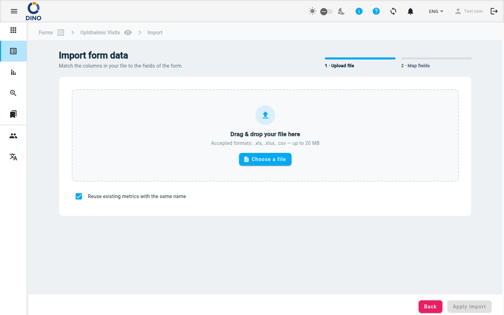

Importer des données
La page Importer des données vous permet de téléverser en masse des données dans un form schema à partir d'un fichier .xls, .xlsx ou .csv. Un assistant en deux étapes vous guide dans le téléversement du fichier et le mappage des colonnes du fichier aux champs du form.

Accéder à la page d'import
- Rendez-vous dans la liste Forms et sélectionnez un form schema.
- Depuis la vue des données du form, cliquez sur Importer (le bouton de la barre d'outils).
Étape 1 — Téléverser le fichier
La première étape affiche une zone de glisser-déposer ou un sélecteur de fichier.
- Formats acceptés :
.xls,.xlsx,.csv - Taille maximale du fichier : 20 Mo
Pour téléverser :
- Glissez un fichier sur la zone en pointillés ou cliquez sur Choisir un fichier pour parcourir vos dossiers.
- Après la sélection, le nom du fichier apparaît dans une puce accompagnée du nombre de colonnes détectées.
- (Facultatif) Laissez Réutiliser les métriques existantes portant le même nom cochée (valeur par défaut) afin que toute métrique du fichier dont le nom correspond à une métrique déjà présente dans le système soit liée à cette métrique existante plutôt que de créer un doublon. Décochez-la pour toujours créer de nouvelles métriques.
- Cliquez sur Suivant (ou sur le libellé de l'étape « 2 · Mapper les champs ») pour continuer.
Formatage du fichier d'import
Voir la description dans la section ci-dessous
Formats de fichier simples
Dino accepte le même fichier que celui obtenu lors de l'export. Ainsi, la façon la plus simple d'obtenir un fichier correctement formaté pour l'import est d'exporter d'abord des données de form du même schema, puis de supprimer les lignes contenant les données exportées, en ne conservant que les en-têtes de colonnes. Dans tous les cas, assurez-vous que vos en-têtes de colonnes sont explicites – ils seront utilisés comme suggestions lors du mappage.
Métriques identifiées par ID
Si une colonne de métrique de votre fichier fournit l'ID (UUID) de la métrique, cette ligne est liée à la métrique existante possédant cet ID et aucune nouvelle métrique n'est créée. L'ID a la priorité sur le nom de la métrique, ce qui se produit donc indépendamment de l'option Réutiliser les métriques existantes portant le même nom (qui ne s'applique qu'à la correspondance par nom).
Étape 2 — Mapper les champs
Après le téléversement, un tableau répertoriant toutes les colonnes de votre fichier s'affiche. Chaque ligne comporte trois colonnes :
- Colonne du fichier – l'en-tête d'origine de votre fichier.
- Champ du form – une liste déroulante dans laquelle vous sélectionnez le champ du form correspondant.
- Statut – indique si la colonne est mappée, ignorée ou en erreur.
Actions de mappage
- Sélectionner un champ du form – ouvrez la liste déroulante d'une colonne et choisissez le champ correct. Vous pouvez effectuer une recherche dans la liste déroulante.
- Ignorer une colonne – sélectionnez l'option — Ignorer cette colonne — dans la liste déroulante, ou cliquez sur le bouton Ignorer dans la colonne de statut. Les colonnes ignorées sont grisées.
- Restaurer une colonne ignorée – cliquez sur le bouton Restaurer dans la colonne de statut.
Correspondance automatique
Cliquez sur Correspondance automatique pour laisser Dino associer automatiquement les colonnes aux champs du form en fonction de la similarité des noms. C'est un bon point de départ – vérifiez et ajustez les mappages au besoin.
La correspondance automatique fonctionne mieux avec des en-têtes qui correspondent exactement aux libellés des champs ou qui contiennent des mots-clés similaires.
Répétition
Si le champ du form sélectionné est un champ répétitif (par exemple, plusieurs numéros de téléphone), une saisie Répétition apparaît sous la liste déroulante. Saisissez l'index de répétition (0, 1, 2, …) pour affecter cette colonne du fichier à une occurrence du groupe répétitif.
Récapitulatif de la barre d'outils
En haut de la zone de mappage, vous pouvez voir trois puces :
- Total des colonnes – nombre de colonnes du fichier.
- Mappées – colonnes qui ont été affectées à un champ du form.
- Ignorées – colonnes que vous avez choisi d'ignorer.
Utilisez la saisie Rechercher des colonnes pour filtrer le tableau par nom de colonne du fichier.
Appliquer l'import
Lorsque toutes les colonnes souhaitées sont mappées et qu'aucune erreur ne subsiste, le bouton Appliquer l'import devient actif. Cliquez dessus pour lancer l'import. Pendant le traitement, un indicateur de chargement s'affiche. Vous pouvez cliquer sur Retour pour revenir à l'étape 1 ou annuler l'import.
Après un import réussi, vous êtes redirigé vers la liste de form du form, où les nouvelles données apparaissent.
Mappage en double
Si vous mappez le même champ du form à plus d'une colonne du fichier, une erreur de validation s'affiche et le bouton Appliquer l'import reste inactif jusqu'à correction.
Format de fichier
Nous décrivons la procédure pour importer des données en masse à l'aide d'un fichier Excel généré depuis Google Sheets. La même procédure s'applique aux fichiers CSV ou en travaillant directement avec Excel.
Nous supposons que vous souhaitez importer des données dans un form appelé Projects qui comporte 2 diapositives, dont l'une est une diapositive répétitive :

Le form Projects a été créé à l'aide du XLSForm suivant. La feuille « survey » est
| type | name | label |
|---|---|---|
| begin group | start | Start |
| select_one countries | country | Country |
| select_multiple countries | country_other | Other Countries |
| text | title | Project Title |
| date | project_date_start | Start date |
| select_one donors | selected_donor | Donor |
| integer | budget | Budget |
| boolean | isleader | Leading applicant |
| end group | ||
| begin repeat | indicators | Indicators |
| text | indic | Indicator description |
| integer | value_indic | Value reached |
| end repeat |
et la feuille « choices » est
| list_name | name | label |
|---|---|---|
| donors | ue | UE |
| donors | govita | ITALIAN GOVERNMENT |
| donors | un | UN |
| donors | pub | ALTRI DONATORI PUBBLICI |
| donors | la | ENTI LOCALI |
| donors | priv | DONATORI PRIVATI |
| donors | other | Others |
| countries | AFG | Afghanistan |
| countries | ALB | Albania |
| countries | DZA | Algeria |
| countries | ASM | American Samoa |
Suivez ces étapes :
- Créez un fichier vide ne contenant qu'une seule feuille (les noms du fichier et de la feuille n'ont pas d'importance).
- Dans la première ligne, vous devez indiquer les noms des champs du form et des champs du form spécifiques à DINO. Dans cet exemple, les champs du form peuvent être :
- country
- country_other
- title
- project_date_start
- selected_donor
- budget
- isleader
- indic (*)
- value_indic (*)
attention : les champs situés dans des diapositives répétitives doivent être traités différemment (c'est pourquoi nous avons mis un astérisque). Veuillez vous référer à la section spécifique ci-dessous.
Les champs spécifiques à DINO peuvent être :
- created_at. La date de création du form. À préciser uniquement si vous souhaitez que vos forms aient une date de création différente de la date d'import ;
- user_data_ref_id. L'ID de l'utilisateur qui sera associé au form (par défaut, l'ID de l'utilisateur qui importe les forms) ;
- area_id. L'ID de la métrique AREA à associer au form ;
- [area_name]
- case_id. L'ID de la métrique CASE à associer au form ;
- [case_name]
- project_id. L'ID de la métrique PROJECT à associer au form ;
- [project_name]
- [project_code]
- location_id. L'ID de la métrique LOCATION à associer au form ;
- [location_name]
- organization_id. L'ID de la métrique ORGANISATION à associer au form ;
-
[organization_name]
-
chaque ligne correspondra à un nouveau form différent. Ainsi, si nous créons un fichier avec un en-tête + , disons, 5 lignes de données, si le téléversement réussit, nous créerons 5 nouveaux forms dans DINO.
- Il n'est pas nécessaire d'avoir une colonne pour chaque champ du form ; il n'est pas nécessaire de remplir toutes les lignes d'une colonne donnée, mais si un champ est vide pour toutes les lignes, il peut être omis,
- Les champs de date doivent être formatés AAAA-MM-JJ sous forme de texte (attention).
- Les champs à choix unique doivent contenir l'une des options acceptées, comme spécifié dans les « choices » (voir le form builder ou le fichier XLSForm).
- Les champs à choix multiple doivent être formatés selon le modèle suivant : [opt1, opt2] (c'est-à-dire une liste d'options entre crochets).
Par exemple, un fichier valide pourrait être le suivant :
| country | country_other | title | project_date_start | budget | isleader | area_id |
|---|---|---|---|---|---|---|
| ALB | [AFG,DZA] | Human rights in education | 2022-01-28 | 120000 | true | 81387ff7-5c7d-44e7-9dc6-76b8d09265ac |
| ASM | A new approach to social justice | 2022-02-14 | 20000 | 81387ff7-5c7d-44e7-9dc6-76b8d09265ac |
Dans ce cas, nous importons 2 forms et, pour les deux, nous ne sélectionnons que la métrique AREA. De plus, remarquez que nous ne fournissons pas tous les champs du form pour tous les forms, mais que pour les champs pour lesquels nous fournissons une valeur, nous suivons strictement les indications décrites ci-dessus.
Gestion des métriques lors de l'import
Lors de l'import de données de form, en ce qui concerne les métriques, vous pouvez souhaiter :
- créer de nouvelles métriques pendant l'import
- réutiliser des métriques déjà créées
Les règles à suivre pour gérer correctement les métriques sont les suivantes :
| MÉTRIQUE | CRÉATION DEPUIS L'UI | CRÉATION PAR IMPORT | CRÉATION + ATTRIBUTION PAR IMPORT | UTILISATION PAR IMPORT | CRÉATION + ATTRIBUTION PAR IMPORT (parent) | UTILISATION COMME PARENT |
|---|---|---|---|---|---|---|
| Case | name | name | name | id, ou name (avec l'option reuse), ou les deux | name | id, ou name (avec l'option reuse), ou les deux |
| Organization | name | name | name | id, ou name (avec l'option reuse), ou les deux | name | id, ou name (avec l'option reuse), ou les deux |
| Location | name | name | name | id, ou name (avec l'option reuse), ou les deux | name | id, ou name (avec l'option reuse), ou les deux |
| Area | name | name | name | id, ou name (avec l'option reuse), ou les deux | name | id, ou name (avec l'option reuse), ou les deux |
| Project | name, code | name, code | name, code | id | name, code | id |
Diapositives répétitives
Si vous avez des champs dans des diapositives répétitives, ils doivent être nommés différemment. Chaque champ de la diapositive répétitive doit être nommé \<field_name>__X où X est le numéro de répétition, de 0 (correspondant à une répétition) à N-1, où N est le nombre total de répétitions de la diapositive dans ce form. Par exemple, supposons que vous n'ayez qu'une seule répétition de la diapositive répétitive et que vous souhaitiez ajouter les deux champs « Indicator description » et « Value reached ». Vous devrez alors ajouter ces deux colonnes à votre fichier d'import :
| indic__0 | value_indic__0 |
|---|---|
| Number of children | 100 |
Ainsi, par exemple, nous pourrions avoir :
| country | budget | indic__0 | value_indic__0 | indic__1 | value_indic__1 | isleader |
|---|---|---|---|---|---|---|
| ALB | 120000 | Children | 100 | true | ||
| ASM | 20000 | |||||
| AFG | 15000 | Parents | 45 | Schools | 34 | true |
Erreurs
Vérifiez les ID de votre fichier avant l'import. Si une colonne fait référence à une entité par son ID (une métrique ou un utilisateur) et qu'aucune entité ne possède cet ID dans Dino, les formulaires importés ne pourront pas être synchronisés avec le serveur.